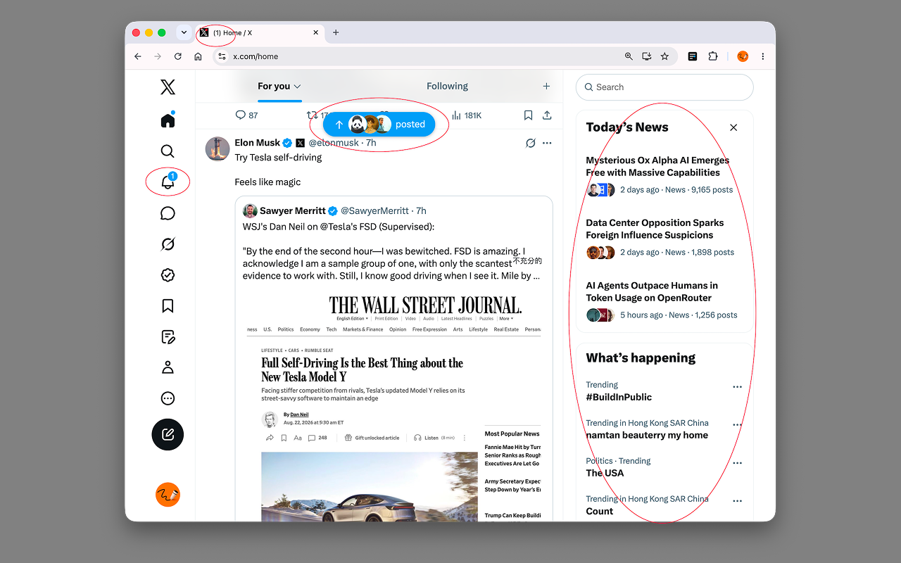

Notification badges
Hide the numbers and colored dots while keeping the Notifications icon and label visible.
A quieter X experience
A quieter way to use X, with the small distractions gently out of view.
Free, open source, no tracking.

Four small switches
Hide the numbers and colored dots while keeping the Notifications icon and label visible.
Remove the blue prompt that keeps asking you to jump back to the top of the timeline.
Clear away search, trends, recommendations, and the panel that never stops refreshing.
Remove unread counts and keep X's current favicon without the notification dot.
Why Clean X Up
Clean X Up gives the interface a little more silence, so the things you chose to read can stay in view.
Make it yours
Each feature can be turned on or off independently. The popup follows your browser language, with English and Simplified Chinese included.